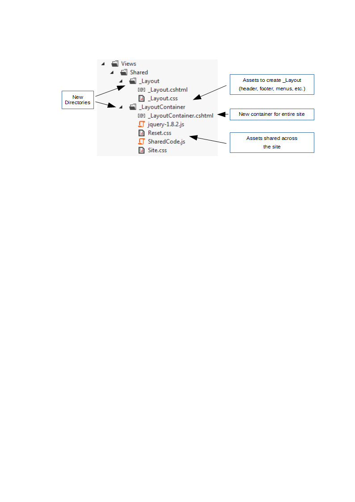

Dynamic Bundles for ASP.NET MVC
Benefits/key takeaways
Dynamic Bundles is based on MVC bundles, giving you the same minification and combining of files. However, it dramatically improves maintainability and code reuse of ASP.NET MVC sites by:
- Co-location the HTML, CSS, JavaScript and images that make up a page or component together, instead of organizing in separate directories by type. This makes dependencies between files of different types much clearer.
- Auto generating CSS and JavaScript bundles that contain the right files in the right order, based on their file organisation. Caching keeps CPU usage and disk accesses minimal.
Download from NuGet + social media
File Structure
Classic MVC
- HTML, CSS, JavaScript and image files organised in separate directories by type.
- CSS, JavaScript that support different components tend to be put in the same physical files, creating hidden dependencies.
- Long brittle urls from CSS files to background images.
- Unclear what CSS, JavaScript and images are required for given component, making reuse harder.

Dynamic Bundles
- HTML, CSS, JavaScript and image files that belong together sit in the same directory. Dynamic Bundles contains a view engine that lets you put partial views and layout files in their own sub directories.
- Splitting CSS, JavaScript by component encourages developers to keep these files small and focussed.
- Having CSS and images referred from that CSS in the same directory makes for short simple image urls.
- Putting all assets that make up a component in a separate directory makes reuse much easier. ############ suipports areas

Bundles
Classic MVC
- You have to create and maintain bundles yourself.
- You have to make sure to include the correct files, and in the right order.
- Need to recompile and redeploy the site to change bundles.
public static void RegisterBundles(BundleCollection bundles)
{
// Need to create bundles yourself, in code. To make any change, you have to recompile.
// Must always make sure to include the right files in the right order.
bundles.Add(new ScriptBundle("~/bundles/jquery").Include(
"~/Scripts/jquery-{version}.js"));
bundles.Add(new ScriptBundle("~/bundles/shared/js").Include(
"~/Scripts/SharedCode.js",
"~/Scripts/VariousCode.js"));
bundles.Add(new ScriptBundle("~/bundles/pile/js").Include(
"~/Scripts/PileOfCode.js"));
bundles.Add(new StyleBundle("~/Content/shared/css").Include(
"~/Content/Reset.css",
"~/Content/Site.css"));
bundles.Add(new StyleBundle("~/Content/account/css").Include("~/Content/Account.css"));
}
@Styles.Render("~/Content/shared/css")
@Styles.Render("~/Content/account/css")
...
@RenderBody()
...
@Scripts.Render("~/bundles/jquery")
@Scripts.Render("~/bundles/shared/js")
@Scripts.Render("~/bundles/pile/js")
Dynamic Bundles
- Bundles are auto generated. No need to create bundles yourself.
- Ensures only required CSS and JavaScript files are loaded, and in the right order.
- Optimizes client side caching, by combining files into bundles by area, controller, shared and layout.
- When CSS and JavaScript files are added or deleted, new bundles are automatically generated to take account of this
public class BundleConfig
{
public static void RegisterBundles(BundleCollection bundles)
{
// No need to register bundles in BundleConfig
}
}
@*Nominate where to load the bundles. The bundles themselves are automatically generated.*@
@DynamicBundlesTopRender()
...
@RenderBody()
...
@DynamicBundlesBottomRender()
How it works
Installation
- Install Dynamic Bundles
- Add view engine to global.asax
- Add layout container
- Update Web.config for views
Install Dynamic Bundles
Install the DynamicBundles package from NuGet:
Install-Package DynamicBundles
Add view engine to global.asax
Update your global.asax.cs or global.asax.vb, to add the DynamicBundles view engine:
public class MvcApplication : System.Web.HttpApplication
{
protected void Application_Start()
{
AreaRegistration.RegisterAllAreas();
WebApiConfig.Register(GlobalConfiguration.Configuration);
FilterConfig.RegisterGlobalFilters(GlobalFilters.Filters);
RouteConfig.RegisterRoutes(RouteTable.Routes);
BundleConfig.RegisterBundles(BundleTable.Bundles);
// Add DynamicBundles view engine. This functions the same as the Razor view engine,
// but can find views sitting in their own directories, such as ~/Views/Home/Index/Index.cshtml
// Note: this leaves the other view engines in place, so they can still be used.
ViewEngines.Engines.Add(new DynamicBundles.DynamicBundlesViewEngine());
}
...
}
Add layout container
In classic MVC sites, pages sit within a _Layout.cshtml or _Layout.vbhtml file, which contains shared headers, footers, etc.
The problem when introducing Dynamic Bundles is that you want to separate CSS, JavaScript and pictures that are specific to the layout from those that are shared by the entire site.
To create this separation, create a new file _LayoutContainer.cshtml (you'll see the content in a moment). This and the _Layout.cshtml go into their own directory. The result looks like this:
Classic MVC

Dynamic Bundles
Contents of _LayoutContainer.cshtml
<!DOCTYPE html>
<html>
@*Nominate where to load the bundles. The bundles themselves are automatically generated.*@
@DynamicBundlesTopRender()
@RenderBody()
@DynamicBundlesBottomRender()
</html>
Changes to _Layout.cshtml
- Remove the doctype and html tags.
- Remove all style and script rendering, including rendering of script sections.
@{ // Add _LayoutContainer as the container for the _Layout.cshtml file itself. Layout = "../_LayoutContainer/_LayoutContainer.cshtml"; } <!DOCTYPE html> <html> <head> <meta charset="utf-8" /> <meta name="viewport" content="width=device-width" /> <title>@ViewBag.Title</title> @Styles.Render("~/Content/shared/css") @Styles.Render("~/Content/account/css") </head> <body> @RenderBody() @Scripts.Render("~/bundles/jquery") @Scripts.Render("~/bundles/shared/js") @Scripts.Render("~/bundles/pile/js") @RenderSection("scripts", required: false) </body> </html>
Update Web.config for views
In addition to the Web.config file in the root directory of your site, each MVC site also has Web.config files in its Views directories (if your site uses areas, each area has a Views directory).
The Web.config files in the Views directories need to be updated to:
- Install the Dynamic Bundles page base type. This gets each view to register the assets it needs, so bundles with the right files can be generated.
- Allow the web server to serve CSS, JavaScript and image files from the Views directory.
<configuration>
<system.web.webPages.razor>
<pages pageBaseType="System.Web.Mvc.WebViewPageDynamicBundles.WebViewPage">
...
</pages>
</system.web.webPages.razor>
<system.webServer>
<!--
The BlockViewHandler blocks all requests. In classic MVC sites, it is used to block all requests for files from
a Views directory. With Dynamic Bundles where CSS, JavaScript and images files are co-located with the view files,
we only want to block requests for the view files.
-->
<handlers>
<remove name="BlockViewHandler"/>
<!-- Replace path="*.cshtml" with path="*.vbhtml" if you use Visual Basic. -->
<add name="BlockViewHandler" path="*.cshtml" verb="*" preCondition="integratedMode" type="System.Web.HttpNotFoundHandler" />
</handlers>
</system.webServer>
</configuration>